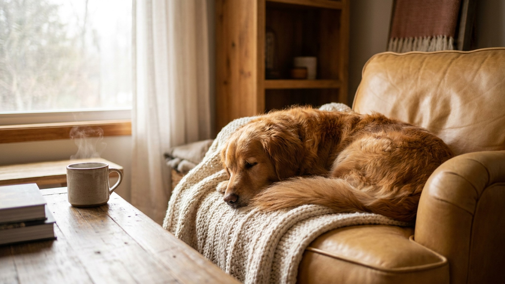

Взрослый кобель леонбергера весит столько же, сколько среднестатистический взрослый мужчина — 65–75 кг. При этом порода создавалась как семейная, и это не маркетинг: леонбергеры действительно работают нянями и терапевтическими собаками. Но масштаб накладывает обязательства, которые стоит оценить честно ещё до того, как щенок приедет домой. Ниже — четыре ключевых блока, которые нужно обдумать будущему владельцу.
🐾 Ваш питомец — леонбергер?
Заведите профиль в AnimaLife: приложение запомнит породу, возраст и вес и будет подсказывать по уходу именно для неё. Вопросы AI-ветеринару — круглосуточно и бесплатно.
Завести профиль → Завести в MAX →
У вас iPhone? AnimaLife есть в App Store
Леонбергер — порода-великан. Кобели вырастают до 75–80 см в холке и набирают 65–75 кг, суки чуть компактнее — 55–65 кг. Это прямо влияет на быт:
Леонбергер по характеру — мягкий, терпеливый, глубоко привязанный к семье. Порода отлично уживается с детьми и другими животными, практически лишена агрессии к людям. Именно поэтому щенка нужно социализировать рано и системно: не потому что он опасен, а потому что 70 кг необученной доброй собаки — это неуправляемый хаос.
Леонбергер — не спортивная порода-марафонец. Взрослой собаке достаточно двух спокойных прогулок по 40–60 минут в день плюс свободный выгул на безопасной территории. Изнурительные пробежки и силовые нагрузки ей не нужны и даже вредны.
Особого внимания требует щенячий период до 18 месяцев: скелет крупных пород формируется долго, и перегрузки в это время закладывают проблемы на годы вперёд. Конкретно: никаких прыжков с высоты, никаких длинных подъёмов по лестнице, никакого интенсивного бега по твёрдым покрытиям. Оптимальные нагрузки для щенка и режим активности по возрасту обсудите с ветеринаром на первом плановом осмотре.
Шерсть у леонбергера двойная, густая, с гривой вокруг шеи. Вычёсывать нужно 2–3 раза в неделю, в сезон линьки — ежедневно. Без регулярного груминга шерсть сваливается в колтуны, особенно за ушами и в паху. Раз в 1,5–2 месяца — стрижка когтей и чистка ушей; купание по необходимости с полной просушкой феном.
Слюни — отдельная реальность породы. Леонбергер слюнявит умеренно для своего класса, но тряпочка всегда должна быть под рукой, а светлые обои и светлая одежда хозяев — под вопросом.
Самое важное решение, которое нужно принять осознанно: леонбергеры, как все гиганты, живут 8–9 лет. Это вдвое меньше, чем средняя собака. Порода подарит вам очень много тепла за короткий срок — и это стоит принять до, а не после покупки щенка.
Материал носит информационный характер и не заменяет очную консультацию ветеринара.
🐾 У вас леонбергер?
AnimaLife соберёт уход под породу: к каким болезням есть склонность, что проверять по возрасту, чем кормить и когда пора к врачу. Бесплатно, прямо в мессенджере.
Собрать план ухода → Собрать в MAX →
У вас iPhone? AnimaLife есть в App Store
🐾 Понравился разбор?
Подпишитесь на канал — каждый день разбираем по одному тревожному симптому у кошек и собак: что в пределах нормы, а когда пора к врачу. Подпишитесь, чтобы не пропустить разбор, который может спасти здоровье вашего питомца.